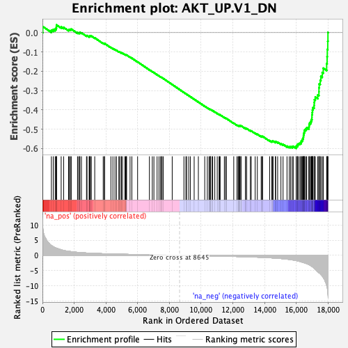

| | | Dataset | DE_genes2 |
| Phenotype | NoPhenotypeAvailable |
| Upregulated in class | na_neg |
| GeneSet | AKT_UP.V1_DN |
| Enrichment Score (ES) | -0.5991653 |
| Normalized Enrichment Score (NES) | -1.6856612 |
| Nominal p-value | 0.0 |
| FDR q-value | 0.0028710975 |
| FWER p-Value | 0.024 |
Table: GSEA Results Summary

Fig 1: Enrichment plot: AKT_UP.V1_DN
Profile of the Running ES Score & Positions of GeneSet Members on the Rank Ordered List
| SYMBOL | RANK IN GENE LIST | RANK METRIC SCORE | RUNNING ES | CORE ENRICHMENT | | 1 | ACKR3 | 22 | 9.086 | 0.0314 | No |
| 2 | FXYD1 | 563 | 3.237 | 0.0128 | No |
| 3 | KRT15 | 682 | 2.837 | 0.0163 | No |
| 4 | MATN2 | 803 | 2.513 | 0.0186 | No |
| 5 | TEC | 862 | 2.400 | 0.0240 | No |
| 6 | TPD52L1 | 880 | 2.351 | 0.0315 | No |
| 7 | TCAF2 | 886 | 2.346 | 0.0396 | No |
| 8 | KLF2 | 1180 | 1.819 | 0.0297 | No |
| 9 | CAP2 | 1336 | 1.607 | 0.0268 | No |
| 10 | PLEK2 | 1647 | 1.316 | 0.0142 | No |
| 11 | C11orf71 | 1697 | 1.284 | 0.0161 | No |
| 12 | NT5DC3 | 1765 | 1.238 | 0.0168 | No |
| 13 | ZNF385A | 1814 | 1.200 | 0.0184 | No |
| 14 | SCCPDH | 2211 | 0.968 | -0.0003 | No |
| 15 | TSPYL4 | 2281 | 0.938 | -0.0008 | No |
| 16 | EFEMP1 | 2351 | 0.906 | -0.0014 | No |
| 17 | SLC7A5 | 2360 | 0.899 | 0.0013 | No |
| 18 | TP53I13 | 2459 | 0.865 | -0.0010 | No |
| 19 | SLC39A13 | 2777 | 0.762 | -0.0161 | No |
| 20 | DRAM1 | 2810 | 0.753 | -0.0152 | No |
| 21 | CHST12 | 2944 | 0.717 | -0.0200 | No |
| 22 | IFRD2 | 2961 | 0.711 | -0.0184 | No |
| 23 | HPS1 | 2992 | 0.702 | -0.0175 | No |
| 24 | SPCS3 | 3022 | 0.696 | -0.0167 | No |
| 25 | HEBP1 | 3080 | 0.681 | -0.0174 | No |
| 26 | RPS6KB2 | 3296 | 0.626 | -0.0272 | No |
| 27 | CAV2 | 3830 | 0.525 | -0.0552 | No |
| 28 | IL13RA1 | 3907 | 0.512 | -0.0576 | No |
| 29 | PDLIM4 | 3915 | 0.511 | -0.0561 | No |
| 30 | BLVRB | 4315 | 0.450 | -0.0769 | No |
| 31 | PUS7 | 4442 | 0.428 | -0.0824 | No |
| 32 | SLC39A4 | 4572 | 0.410 | -0.0881 | No |
| 33 | RAMP1 | 4669 | 0.396 | -0.0921 | No |
| 34 | RPAP3 | 4819 | 0.379 | -0.0991 | No |
| 35 | LIMD1 | 4850 | 0.374 | -0.0994 | No |
| 36 | PPP1R3C | 4954 | 0.361 | -0.1039 | No |
| 37 | FHOD3 | 4975 | 0.359 | -0.1037 | No |
| 38 | RECK | 5049 | 0.351 | -0.1065 | No |
| 39 | RNF25 | 5194 | 0.334 | -0.1134 | No |
| 40 | FAH | 5243 | 0.328 | -0.1149 | No |
| 41 | SLC37A4 | 5295 | 0.321 | -0.1166 | No |
| 42 | IL17RC | 5301 | 0.321 | -0.1157 | No |
| 43 | SLCO3A1 | 5524 | 0.297 | -0.1271 | No |
| 44 | DNAJA3 | 5638 | 0.286 | -0.1324 | No |
| 45 | PDIA5 | 5999 | 0.250 | -0.1517 | No |
| 46 | EIF4E3 | 6744 | 0.181 | -0.1927 | No |
| 47 | EXOSC1 | 6925 | 0.163 | -0.2022 | No |
| 48 | ZFYVE21 | 7028 | 0.153 | -0.2073 | No |
| 49 | PAQR7 | 7228 | 0.135 | -0.2180 | No |
| 50 | IFFO1 | 7349 | 0.124 | -0.2243 | No |
| 51 | ADGRL1 | 7449 | 0.115 | -0.2294 | No |
| 52 | TYW1 | 7504 | 0.110 | -0.2320 | No |
| 53 | POLD2 | 7540 | 0.106 | -0.2336 | No |
| 54 | RCE1 | 7615 | 0.098 | -0.2374 | No |
| 55 | ADHFE1 | 8181 | 0.043 | -0.2689 | No |
| 56 | TSPAN4 | 8919 | -0.026 | -0.3101 | No |
| 57 | GSPT2 | 9043 | -0.037 | -0.3168 | No |
| 58 | ZC3H12C | 9093 | -0.041 | -0.3194 | No |
| 59 | ITGBL1 | 9224 | -0.053 | -0.3265 | No |
| 60 | MSRB2 | 9327 | -0.062 | -0.3320 | No |
| 61 | GALNT16 | 9565 | -0.085 | -0.3450 | No |
| 62 | CDC42BPA | 9830 | -0.111 | -0.3593 | No |
| 63 | RXRB | 10232 | -0.153 | -0.3813 | No |
| 64 | RMND1 | 10395 | -0.170 | -0.3897 | No |
| 65 | TULP3 | 10502 | -0.181 | -0.3950 | No |
| 66 | ZDHHC6 | 10573 | -0.187 | -0.3983 | No |
| 67 | BTBD2 | 10584 | -0.188 | -0.3981 | No |
| 68 | FAS | 10589 | -0.188 | -0.3977 | No |
| 69 | SERPINF2 | 10694 | -0.201 | -0.4028 | No |
| 70 | STMP1 | 10735 | -0.205 | -0.4043 | No |
| 71 | ESR2 | 10866 | -0.219 | -0.4108 | No |
| 72 | BCS1L | 11021 | -0.237 | -0.4186 | No |
| 73 | SMARCD3 | 11134 | -0.251 | -0.4239 | No |
| 74 | SATB1 | 11168 | -0.255 | -0.4249 | No |
| 75 | EFEMP2 | 11204 | -0.260 | -0.4259 | No |
| 76 | MRPS6 | 11468 | -0.294 | -0.4396 | No |
| 77 | MSL2 | 11546 | -0.304 | -0.4428 | No |
| 78 | SIRT3 | 11594 | -0.309 | -0.4443 | No |
| 79 | MOCOS | 12061 | -0.369 | -0.4691 | No |
| 80 | AMPD2 | 12267 | -0.398 | -0.4791 | No |
| 81 | ZNF771 | 12339 | -0.410 | -0.4816 | No |
| 82 | POLI | 12372 | -0.415 | -0.4819 | No |
| 83 | ASS1 | 12411 | -0.422 | -0.4825 | No |
| 84 | PHF1 | 12420 | -0.422 | -0.4815 | No |
| 85 | ZSCAN26 | 12446 | -0.427 | -0.4813 | No |
| 86 | GNA14 | 12511 | -0.435 | -0.4834 | No |
| 87 | CNN2 | 12518 | -0.436 | -0.4821 | No |
| 88 | STAT5A | 12797 | -0.479 | -0.4960 | No |
| 89 | GRAMD1A | 12799 | -0.479 | -0.4943 | No |
| 90 | FUT10 | 12876 | -0.491 | -0.4968 | No |
| 91 | SASH1 | 13108 | -0.535 | -0.5078 | No |
| 92 | ASF1A | 13163 | -0.545 | -0.5089 | No |
| 93 | GATAD2B | 13412 | -0.593 | -0.5207 | No |
| 94 | CDPF1 | 13549 | -0.617 | -0.5261 | No |
| 95 | FBXO32 | 13790 | -0.669 | -0.5371 | No |
| 96 | MMAA | 13853 | -0.681 | -0.5381 | No |
| 97 | SNHG6 | 13878 | -0.688 | -0.5370 | No |
| 98 | GSTA4 | 14328 | -0.804 | -0.5593 | No |
| 99 | IRS1 | 14460 | -0.851 | -0.5635 | No |
| 100 | SYPL2 | 14493 | -0.863 | -0.5622 | No |
| 101 | ID3 | 14541 | -0.879 | -0.5617 | No |
| 102 | ZNF213 | 14683 | -0.929 | -0.5663 | No |
| 103 | AQP5 | 14704 | -0.938 | -0.5640 | No |
| 104 | TCF3 | 14829 | -0.977 | -0.5675 | No |
| 105 | TNS2 | 15036 | -1.072 | -0.5752 | No |
| 106 | CHN2 | 15171 | -1.134 | -0.5786 | No |
| 107 | FKBP11 | 15418 | -1.276 | -0.5878 | No |
| 108 | SIX5 | 15561 | -1.355 | -0.5909 | No |
| 109 | AXIN2 | 15648 | -1.409 | -0.5906 | No |
| 110 | FUT8 | 15749 | -1.498 | -0.5909 | No |
| 111 | BEX4 | 15812 | -1.554 | -0.5887 | No |
| 112 | NR1D1 | 15999 | -1.739 | -0.5929 | Yes |
| 113 | IRS2 | 16006 | -1.744 | -0.5870 | Yes |
| 114 | CBS | 16080 | -1.814 | -0.5846 | Yes |
| 115 | TNNC2 | 16083 | -1.815 | -0.5782 | Yes |
| 116 | RTKN | 16139 | -1.880 | -0.5745 | Yes |
| 117 | GHR | 16233 | -2.031 | -0.5724 | Yes |
| 118 | NID1 | 16302 | -2.143 | -0.5685 | Yes |
| 119 | TIMP3 | 16320 | -2.178 | -0.5617 | Yes |
| 120 | ZEB1 | 16378 | -2.260 | -0.5568 | Yes |
| 121 | EDARADD | 16405 | -2.320 | -0.5499 | Yes |
| 122 | SH3BGR | 16445 | -2.377 | -0.5435 | Yes |
| 123 | FANK1 | 16456 | -2.393 | -0.5355 | Yes |
| 124 | PDE4B | 16466 | -2.410 | -0.5274 | Yes |
| 125 | SCARA3 | 16486 | -2.441 | -0.5197 | Yes |
| 126 | C1S | 16512 | -2.480 | -0.5122 | Yes |
| 127 | ANGPTL4 | 16530 | -2.515 | -0.5041 | Yes |
| 128 | CD248 | 16603 | -2.645 | -0.4986 | Yes |
| 129 | PDGFRA | 16661 | -2.760 | -0.4919 | Yes |
| 130 | HIC1 | 16798 | -3.046 | -0.4886 | Yes |
| 131 | PDZRN3 | 16813 | -3.083 | -0.4783 | Yes |
| 132 | PLTP | 16842 | -3.142 | -0.4686 | Yes |
| 133 | HTRA1 | 16912 | -3.408 | -0.4602 | Yes |
| 134 | KCTD12 | 16956 | -3.555 | -0.4499 | Yes |
| 135 | NCAM1 | 16990 | -3.651 | -0.4386 | Yes |
| 136 | PLPP3 | 16992 | -3.664 | -0.4255 | Yes |
| 137 | ITPKB | 17010 | -3.726 | -0.4131 | Yes |
| 138 | FAM20C | 17024 | -3.795 | -0.4002 | Yes |
| 139 | C1R | 17054 | -3.921 | -0.3878 | Yes |
| 140 | TNFRSF19 | 17129 | -4.227 | -0.3768 | Yes |
| 141 | KCNN4 | 17135 | -4.252 | -0.3618 | Yes |
| 142 | SLIT3 | 17148 | -4.297 | -0.3470 | Yes |
| 143 | GAS1 | 17204 | -4.600 | -0.3336 | Yes |
| 144 | PDLIM3 | 17358 | -5.410 | -0.3227 | Yes |
| 145 | PI16 | 17432 | -5.750 | -0.3062 | Yes |
| 146 | SFRP2 | 17435 | -5.775 | -0.2856 | Yes |
| 147 | PTGIS | 17449 | -5.828 | -0.2654 | Yes |
| 148 | S1PR3 | 17514 | -6.100 | -0.2471 | Yes |
| 149 | SCARA5 | 17554 | -6.298 | -0.2267 | Yes |
| 150 | ALPL | 17642 | -6.818 | -0.2071 | Yes |
| 151 | OGN | 17705 | -7.316 | -0.1843 | Yes |
| 152 | DPT | 17919 | -9.939 | -0.1605 | Yes |
| 153 | ISLR | 17947 | -10.287 | -0.1251 | Yes |
| 154 | PLA2G4A | 17960 | -10.829 | -0.0869 | Yes |
| 155 | FMO2 | 17989 | -12.253 | -0.0445 | Yes |
| 156 | FMO3 | 18001 | -12.763 | 0.0007 | Yes |
Table: GSEA details [plain text format]
Fig 2: AKT_UP.V1_DN: Random ES distribution
Gene set null distribution of ES for AKT_UP.V1_DN